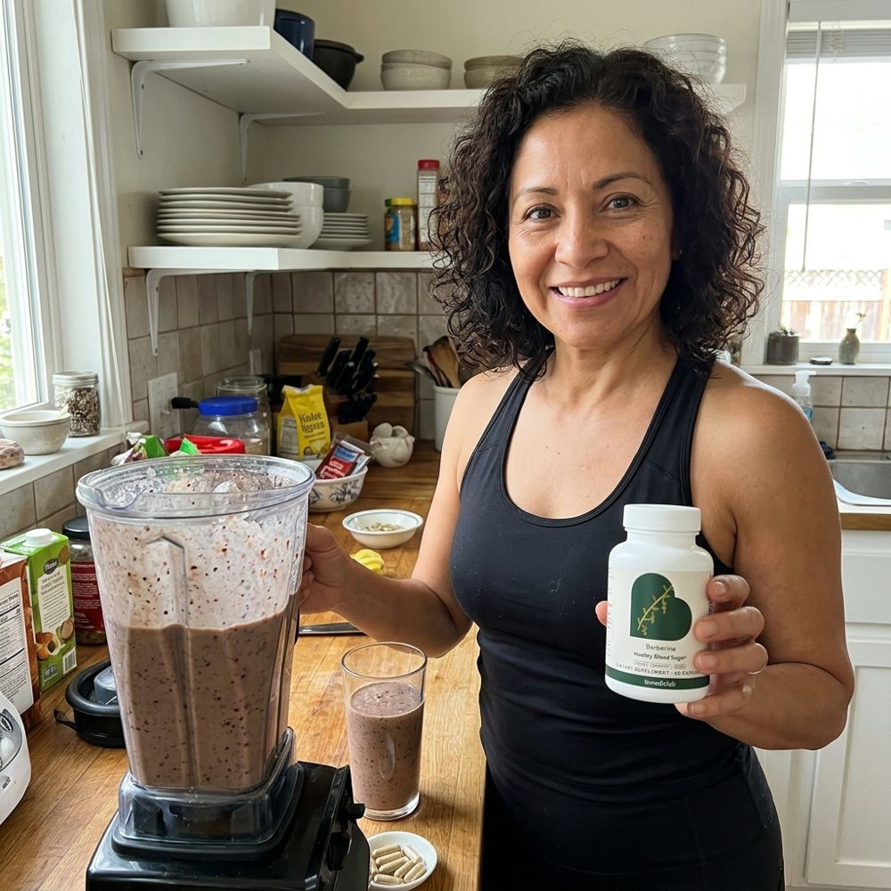
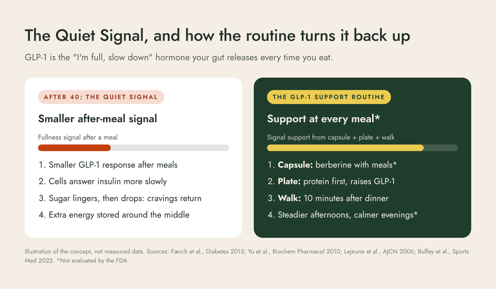
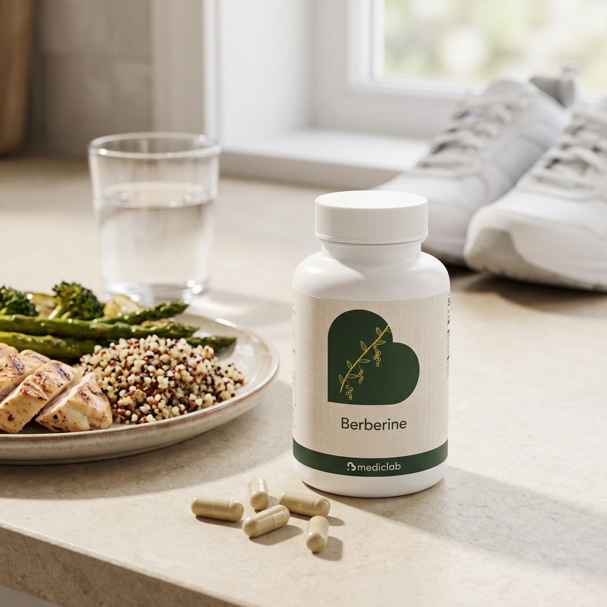
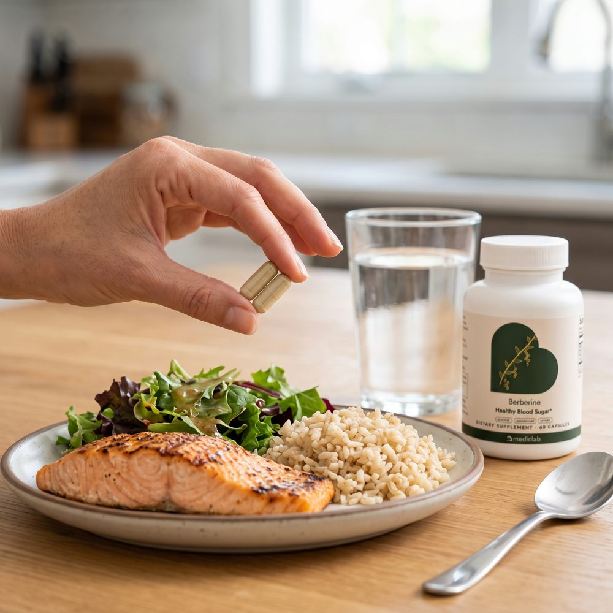
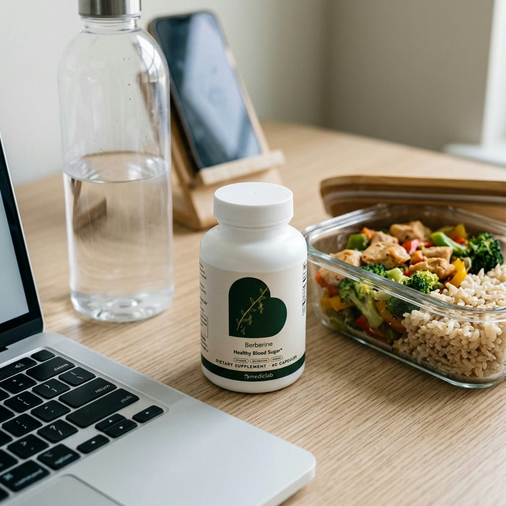
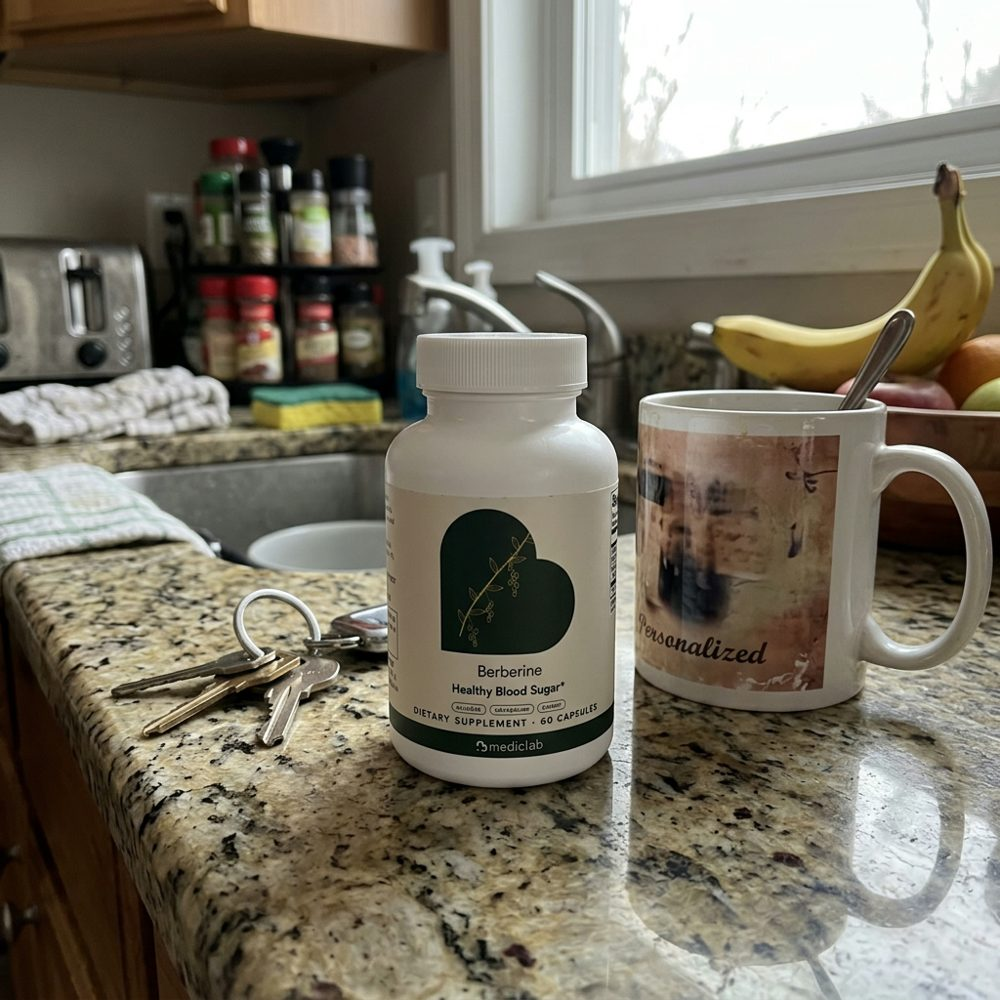
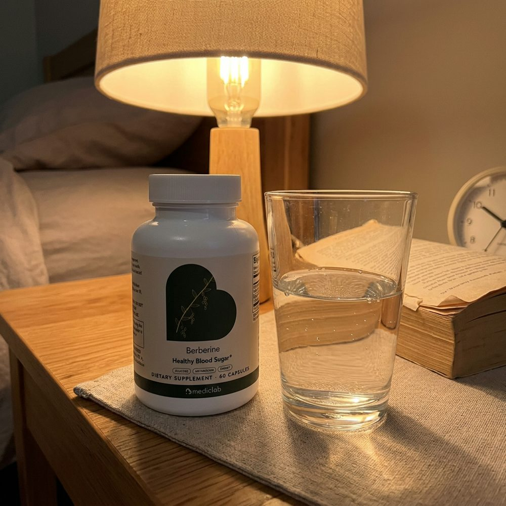
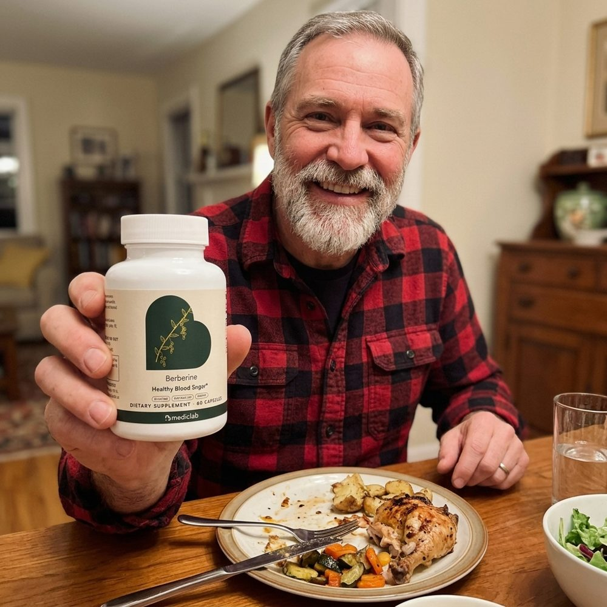

★★★★★
"Finally a plan, not just a pill"
I've tried keto twice. What I like here is the routine: capsule with lunch and dinner, protein first, a walk after dinner. It's simple enough that I actually do it.
Two capsules with meals, protein first, a 10-minute walk after dinner. The daily routine that works with your body's own GLP-1 to support healthy metabolism, steadier blood sugar and your weight-loss plan.* No needle. No prescription.
After 40, the weight that used to come off stays on, because your body's "I'm full" signal gets quieter and your cells answer insulin more slowly. We call it the Quiet Signal. MedicLab Berberine is the core of a 3-step routine built around your meals: berberine with lunch and dinner, protein first, a short walk after eating. It supports healthy glucose metabolism and gives your weight-loss plan a daily system instead of willpower.*
Secure checkout · Free US shipping · 60-day empty-bottle guarantee · Ships from the USA in 1 to 3 days
It's 9:30 at night. You ate a good dinner. And you're standing at the fridge again, not even hungry, just thinking about food.
At 3 pm the crash hits, and the vending machine wins.
You've done keto. Twice. You've counted every calorie in an app. You tried a "fat burner" that made your heart race. The weight came off for three weeks, then came back with friends, and it settled right around your middle.
Meanwhile, a friend started an injection and the weight is melting off her. You looked at the price, the needles, the side effects, and thought: there has to be something my body can do on its own.
"I have tried so many diets, so many pills over the last 20+ years." (a berberine buyer, 5 stars)
Here's the truth: it is not your willpower. After 40, your body quietly changed the rules.
Every time you eat, your gut releases a hormone called GLP-1. It is your body's own "I'm full, slow down, store less" signal. It tells your brain you've had enough and helps insulin move sugar out of your blood after a meal.
Here's what changes. Research shows the after-meal GLP-1 response tends to be smaller in adults carrying extra weight (Færch et al., Diabetes, 2015). At the same time, with age, less muscle and long hours of sitting, your cells answer insulin more slowly.
So the signal gets quieter. Sugar from a meal lingers, then drops. You feel hungry again too soon. Cravings get louder at night, and the extra energy gets stored, mostly around the middle.
That's why the diet that worked at 32 stops working at 45. You're not broken. Your signal is quiet.

We built MedicLab Berberine as the core of a routine that works with your body's own GLP-1 at the three moments that matter most: every meal.

Capsule, plate, walk. Three small moves, every day, that give your quiet signal backup.*
| MedicLab GLP-1 Support Routine | Crash diets & keto | "Fat burner" pills | Random berberine bottles | |
|---|---|---|---|---|
| Works with your body's own fullness signal | ✓ capsule, plate and walk at every meal | ✕ fights hunger with willpower | ✕ stimulants and jitters | ✕ a pill with no plan |
| Easy on the stomach | ✓ taken with meals, start at one capsule | ✕ hard to sustain | ✕ racing heart | ✕ often taken on an empty stomach |
| Label you can check | ✓ every amount printed | Doesn't apply | ✕ proprietary blends | ✕ doses hard to verify |
| Built for months, not weeks | ✓ refills arrive before you run out | ✕ rebound in weeks | ✕ you stop when the jitters start | ✕ forgotten in the cabinet |
| Refund on an opened bottle | ✓ 60 days, even empty | Doesn't apply | Rarely | Rarely |
Diets fight your hunger. Stimulants fight your heart rate. A bottle with no plan sits in the cabinet. None of them gives your quiet signal what it needs: support at every meal, every day.
An illustrative day on the routine. Not a customer result, and individual results vary.
Model portrayal. Not a physician endorsement. Talk to your own doctor before starting any supplement, especially if you take medicine.
Imagine finishing dinner and actually feeling done. No fridge, no pantry, no negotiating with yourself at 9:30.
Imagine 3 pm with energy instead of a pastry. Imagine the evening walk becoming the part of the day you look forward to.
Imagine pulling on the jeans you've been avoiding and having a plan that is finally working with your body instead of against it.
Give the GLP-1 Support Routine 60 days. If you don't love it, every cent comes back, even with an empty bottle.

What to expect: in weeks 1 and 2 your body settles in and the routine starts. By weeks 3 and 4 it becomes automatic. Weeks 8 to 12 are the honest window to judge it, and your 60-day guarantee covers the first order the whole way.*
Take MedicLab Berberine with your meals for up to 60 days. Follow the routine. If it hasn't earned its place in your life, for any reason, email hello@mediclab.us within 60 days of delivery and we refund your first order in full.
You don't need to send anything back. Not even the bottle. Even if it's empty.
Why can we promise that? Because we'd rather earn a customer for years than keep $20.97 from someone the routine didn't suit.
Today: $20.97 for your first bottle. That's under $0.70 a day.
Why now? Because every month you wait is another month of the same 9:30 pm fridge and the same Monday restart. The 50% discount is for your first order only. Start tonight's dinner with the routine.
The 50% first-bottle price is a one-time welcome offer. It applies to your first order on the monthly plan only, once per customer and household. After that, refills are $42.97, still $10 less than buying one bottle at a time, and still with free shipping.
If you've been waiting for a sign to start, this is the only time the first bottle costs $20.97.
MedicLab Berberine is new, so these are example reviews showing the questions and goals customers bring to us. They are not reviews from real customers. Verified reviews from real buyers replace them as orders arrive.

I've tried keto twice. What I like here is the routine: capsule with lunch and dinner, protein first, a walk after dinner. It's simple enough that I actually do it.

I was nervous because of the stomach stories. Taking it with meals and starting at one capsule the first week made all the difference.

800 mg extract, both strengths printed. No mystery blend. I like knowing exactly what I'm taking.
The walk after dinner turned into my favorite part of the day, and I'm not hanging around the pantry at night anymore.

A refund even on an empty bottle? I had nothing to lose, so I started.

I wanted to start with something my body does on its own. Asked my doctor first, then started the plan.
Questions before you start, or help with an order? Our US team is here.